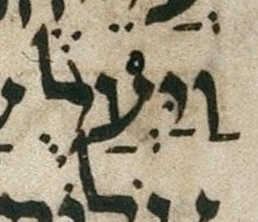

Prev
Next

bcv (link to tanach.us)
er3:3
MPK
וַיַּעֲלֻ֨
qere
וַיַּעֲל֨וּ
at issue
וּ
at issue English
changed a qubuts to a shuruq
folio col line
449A 1 21
The qubuts in the MPK becomes a shuruq dot in the qere.